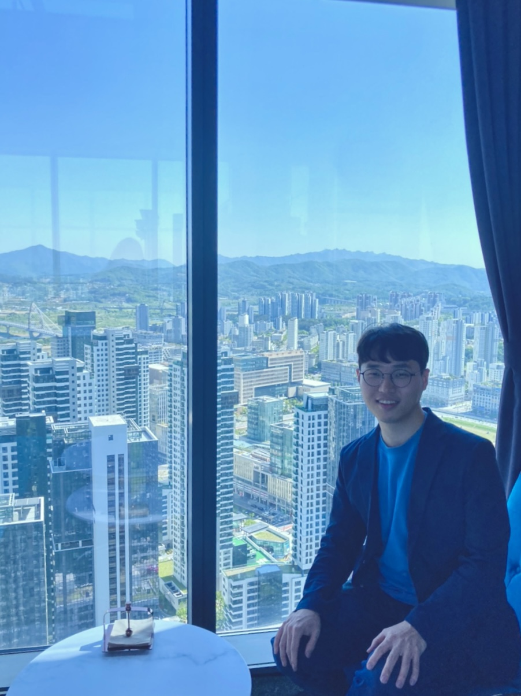

Seonghyeon Moon
 In Sejong City, South Korea.
Curriculum Vitae (CV)
(Last Update 07.15.2023)
Google Scholar

Hello
Welcome to my personal website.
I am a PhD candidate in Computer Science at Rutgers University. Since I started my research, I have been involved in diverse projects and studies. From computer graphics to computer vision, my interests are very broad. My doctoral program, which started with crowd simulation, goes beyond simulation and leads to crowd movement prediction using computer vision. Other than that, I am very interested in object segmentation and object tracking.
Education
| Ph.D. in Computer Science Rutgers University,United States |
2018 - Present |
| M.S. in Mechanical Engineering Gwangju Institute of Science and Technology,South Korea |
2015 - 2017 |
| B.S. in Manufacturing and Systems Design Engieering Northumbria University, United Kingdom |
2009 - 2015 |
| B.S. in Industrial and Information Systems Engieering Seoul National University of Science & Technology,South Korea |
2009 - 2015 |